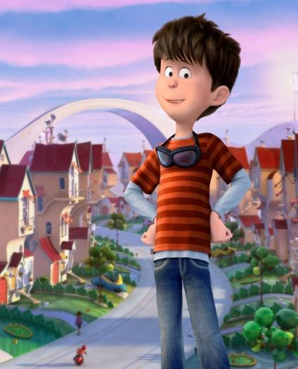

THE LORAX
Ted Wiggins - Zac Efron
He is the main character of the animated film The Lorax, based on the book by Dr. Seuss. He is a boy who lives in a town where everything is artificial and nature has been replaced by truffula trees and other wonders. Ted is determined to impress a girl named Audrey and ultimately seeks to find a real tree to bring back to his environmentally degraded world. His journey highlights themes of environmentalism and the importance of caring for nature.